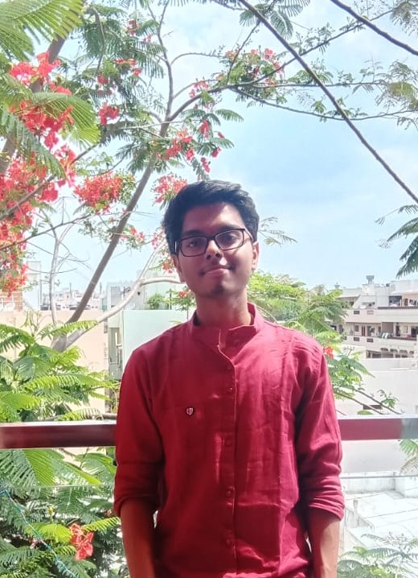

Hi,I Am Varun 😀

- I am pursuing Bachelor of Technology in Electronics and Communication Engineering at Keshav Memorial Institute of Technology(KMIT).
- I am always anxious about exploring new Technologies and fond of Movies and Music. I'm also a Hodophile.
- This is my personal blog site.